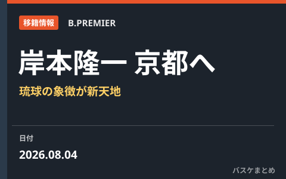

岸本隆一が京都ハンナリーズへ移籍 琉球の象徴が新天地で日本一を目指す

琉球ゴールデンキングスに14年間在籍し、地元・沖縄出身のチームの顔として長く愛されてきた岸本隆一が、京都ハンナリーズへ移籍することが分かりました。2026年8月4日の京都の新体制発表記者会見で明らかになったもので、琉球の象徴的存在の電撃移籍は大きな驚きをもって受け止められています。ここでは報じられた事実にもとづき、移籍の概要と本人の決意を分かりやすく整理します。
移籍の概要
岸本隆一の京都ハンナリーズ加入は、2026年8月4日に行われた京都の新体制発表記者会見の場で公表されました。長年にわたり琉球ゴールデンキングスひと筋でプレーしてきた選手が、新天地として京都を選んだ形です。具体的な契約年数などの詳細は現時点で公表されていませんが、会見には本人が出席し、移籍への思いを自らの言葉で語りました。
岸本隆一とは
岸本隆一は琉球ゴールデンキングスに14年間在籍した生え抜きの選手で、沖縄の地元出身という背景もあり、クラブとファンにとって特別な存在でした。長い在籍期間を通じてチームの顔役を担い、熱心なファンからは「神」と呼ばれるほど厚い支持を集めてきました。その象徴的な選手が別のクラブへ移るというニュースは、琉球ファンにとってひとつの時代の区切りを感じさせる出来事だと言えます。
京都にとっての意味
実績と存在感を兼ね備えたベテランの加入は、チームに経験値とリーダーシップをもたらします。岸本は会見で、移籍の理由について「一言で語れるようなものではない」としながらも、同じ思いを共有する仲間とともに日本一を目指したいという考えから京都を選んだと説明しました。優勝という明確な目標を掲げる新体制にとって、こうした志を持つ選手の合流は、チームづくりの面でも意味の大きい補強となりそうです。
本人が語った決意
岸本は京都でのプレーにかける思いについて、自分個人のためではなく、仲間と協力して優勝をつかみ取るためにベストを尽くしたい、という趣旨の言葉で決意を語りました。会見では「京都に来たわけではない」と、私心ではなくチームの目標を第一に置いた覚悟を強調しています。長く一つのクラブを支えてきた選手だからこそ、新天地での言葉には重みが感じられます。
今後の注目点
今後は、岸本が京都のなかでどのような役割を担い、若い選手たちとどう融合していくかが注目されます。また、古巣・琉球との対戦がどのような雰囲気になるのかもファンの関心を集めそうです。当サイトでは、京都ハンナリーズや今オフの移籍市場の動きを引き続き分かりやすくお届けします。同じ時期の他クラブの移籍は8月の移籍まとめでも整理しています。
出典：バスケット・カウント
https://basket-count.com/article/detail/270115